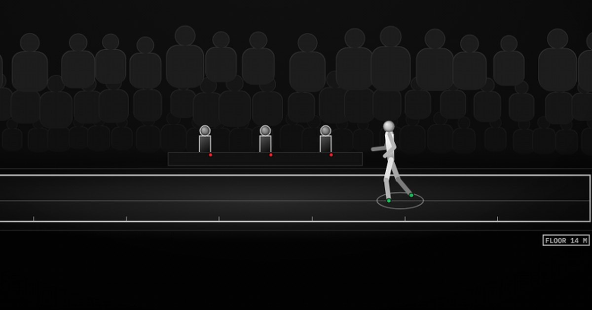

jay. / the floor
no controller seen. press a button, or use the keyboard
file 06 / how it plays

| Controller | Keyboard | |
|---|---|---|
| Run | Right stick toward the far side | Arrow toward the far side, held |
| Hurdle | Left stick up (arms up) | W |
| Punch | Let the right stick go, then flick it as the rings meet | Let go, then tap an arrow as the rings meet |
| Back salto | Flick back, away from where you're going | Arrow back |
| Front salto | Flick forward | Arrow forward |
| Twist | Flick diagonally up and back (or up and forward) | Two arrows, back or forward plus up |
| Jump | Flick straight up | Arrow up |
| Tuck | L2, how far you pull is how tight | F |
| Pike | R2 | J |
| Twist faster | Left stick down (arms in) | S |
| Steady the landing | Left stick left or right | A or D |
| Finish | Left stick up once you're still | W |
| Pause | Options / Start | P or Esc |
Stick drifting? Raise the deadzone in the settings on the games page.